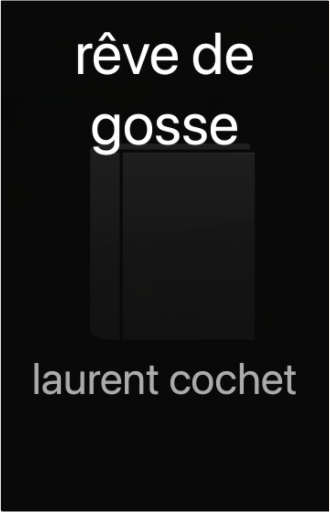

Books
Movies
Albums
Videogames
Games
BD
BD Camille
Blu-ray
Business
Camille
Comics
Cooking
Lego
Manga
Pauline
Photography
Star Wars
T'choupi
Travel
TV Shows
Un livre dont vous êtes le héro
Vinyl
Walt Disney
1
2

rêve de gosse
laurent cochet
japon : miscellanées
chantal deltenre, maximilien dauber
tahiti et la polynésie française
guide évsaion
la rochelle, île de ré
le petit futé
tahiti et polynésie française
le petit futé
5
florence - sienne
geoguide
italie du nord : les grands lacs, venise, milan
geoguide
san francisco
geoguide
sicile
geoguide
japonais : méthode intégrale
harrap's
3
le petit livre du français correct
jean-joseph julaud
5
j'irai dormir chez vous : carnets d'un voyageur taquin
antoine de maximy
1
2


 Made with Delicious Library Made with Delicious Library
Made with Delicious Library Made with Delicious Library